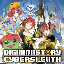
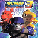
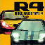
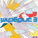
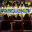

welcome to the Menuseum, a showcase of the coolest menus around!
video game menus and interfaces can be beautiful works of art. sadly, they're often overlooked and taken for granted by most people, so i've created this page to put them in the spotlight! here's some of the most interesting, beautiful, and cool menus that i've encountered in my favorite games.
|  | Digimon Story: Cyber Sleuth |
|  | Digimon World 3 |
|  | R4: Ridge Racer Type 4 |
|  | Wipeout 3 |
|  | Frequency |